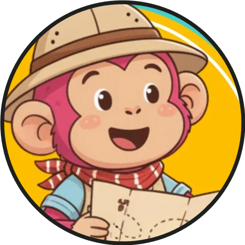
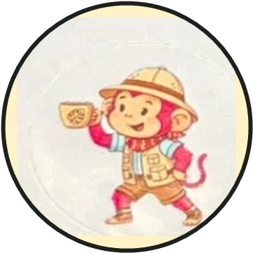

🏝️ Aventurinhas da Fuzz • Ilha dos Sabores
Calculadora de Preparo Fuzz
Descubra a proporção precisa entre água e pó para extrair o máximo de doçura, aroma e corpo dos cafés da torrefação.

Olá, explorador! Prepare sua balança e vamos descobrir a extração perfeita para o seu café!
Descubra a proporção precisa entre água e pó para extrair o máximo de doçura, aroma e corpo dos cafés da torrefação.

O Hario V60 destaca acidez brilhante e notas florais limpas com clareza máxima!
Porções Sugeridas: